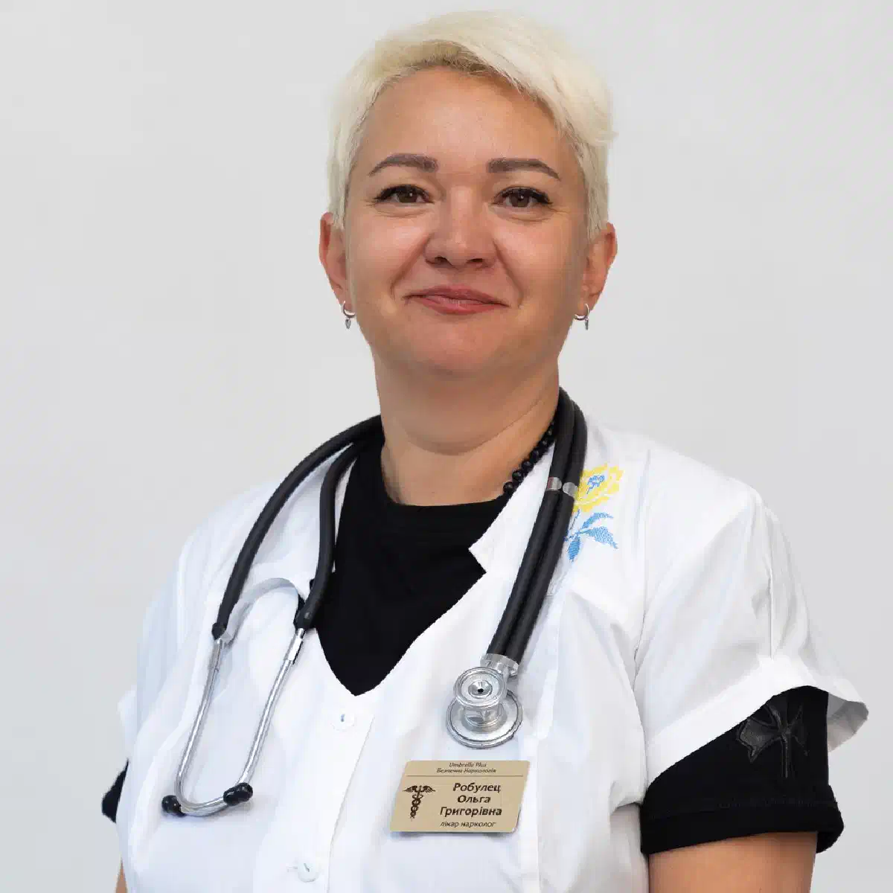

+38(068) 79 72 782
+38(068) 79 72 782Лікування харчового отруєння Харків
Допомога, капельниця, відновлення


Безкоштовна консультація, працюємо цілодобово 24/7
Допомога, капельниця, відновлення

Дата написання: 24 серп. 2026 р.
Останнє оновлення: 25 серп. 2026 р.
Лікування харчового отруєння в Харкові залежить від причини інтоксикації, вираженості симптомів і ступеня зневоднення. Після вживання неякісних продуктів або забрудненої води можуть з’явитися нудота, блювання, діарея, спазми та біль у животі, слабкість, запаморочення, озноб і підвищення температури. У більшості легких випадків основою допомоги є поповнення рідини, однак при багаторазовому блюванні, вираженій діареї та неможливості нормально пити пацієнту може знадобитися медична допомога. Лікування харчового отруєння може проводитися вдома, якщо стан людини стабільний і відсутні ознаки серйозних ускладнень. Лікар оцінює тиск, пульс, температуру, свідомість, вираженість зневоднення, частоту блювання та діареї, характер болю і наявність хронічних захворювань. Якщо пацієнт втратив значний обсяг рідини або не здатний поповнювати її самостійно, за показаннями може застосовуватися крапельниця від отруєння в Харкові.
Тактика лікування визначається після оцінки стану пацієнта. Одній людині достатньо спокою, питного режиму та щадного харчування, іншій потрібна медикаментозна підтримка, а при вираженій втраті рідини може знадобитися інфузійна терапія. Завдання лікаря — не просто зменшити нудоту або діарею, а визначити причину погіршення стану та виключити небезпечні ситуації. Під симптомами звичайного харчового отруєння іноді можуть приховуватися кишкова інфекція, хірургічне захворювання, лікарська інтоксикація або інша патологія. При відносно стабільному стані лікування отруєння вдома дозволяє пройти первинний огляд без поїздки до клініки. Якщо ж є ознаки тяжкого зневоднення, кров у випорожненнях або блювоті, виражений біль, порушення свідомості чи швидке погіршення стану, потрібна більш інтенсивна медична допомога.
Звернутися до спеціаліста варто, якщо блювання або діарея настільки виражені, що людина не може нормально поповнювати рідину, або стан не покращується. Особливо важливо оцінювати не лише кількість епізодів блювання, а й загальне самопочуття пацієнта. Медична допомога необхідна при вираженій слабкості, помітному зменшенні сечовипускання, сухості в роті, запамороченні при вставанні, високій температурі, тривалій діареї або появі крові у випорожненнях. При тяжкому стані краще не обмежуватися спробою самостійно поставити крапельницю від харчового отруєння. Спочатку необхідно визначити, чи не потрібні пацієнту обстеження або госпіталізація.
Перші прояви можуть виникнути через кілька годин після їжі або пізніше. Час появи симптомів залежить від збудника або токсину, кількості вжитого продукту та індивідуальної реакції організму. Найпоширенішими ознаками є нудота, блювання, рідкі випорожнення, спазми та дискомфорт у животі, відсутність апетиту, слабкість, озноб і підвищення температури. Через втрату рідини з’являються сухість у роті, спрага, запаморочення та прискорене серцебиття. Особливо насторожити мають виражена млявість, неможливість нормально пити, рідке сечовипускання, кров у випорожненнях, висока температура та багаторазове блювання, що не припиняється. При тяжкій інтоксикації термінова медична допомога важливіша за спроби усунути симптоми самостійно.
При відносно легкому стані головне завдання — поповнювати втрату рідини. Пити краще невеликими порціями, особливо якщо зберігається нудота. Великий обсяг води за один раз може спровокувати новий епізод блювання. Для регідратації можуть використовуватися готові аптечні розчини з електролітами. Вони призначені для поповнення води та солей, які організм втрачає при блюванні та діареї. Не варто без необхідності приймати одразу кілька препаратів, самостійно починати антибіотики або намагатися повністю зупинити діарею невідомими засобами. Якщо людина не здатна пити або стан погіршується, потрібно звернутися до лікаря.
Виклик лікаря додому в Харкові може бути зручним, якщо пацієнт відчуває виражену слабкість, нудоту, блювання або йому складно самостійно дістатися до медичного закладу. Під час звернення бажано повідомити вік пацієнта, ймовірну причину отруєння, коли з’явилися симптоми, скільки разів виникали блювання та діарея, чи є температура, сильний біль або хронічні захворювання. Після приїзду лікар оцінює стан, вимірює основні показники та визначає подальшу тактику. За необхідності може бути призначена крапельниця при отруєнні вдома, але сама можливість поставити систему не є головною метою виїзду. Важливо визначити, чи безпечно залишати пацієнта вдома.
Домашній формат підходить пацієнтам без ознак тяжкого стану. Лікар може провести огляд, оцінити зневоднення, надати рекомендації щодо регідратації, харчування та медикаментозної терапії за показаннями. Лікування отруєння вдома в Харкові зручне при збереженій свідомості, стабільному тиску та відсутності симптомів, що потребують цілодобового спостереження. За необхідності інфузійної терапії лікар визначає обсяг рідини з урахуванням віку, стану серця, нирок і супутніх захворювань. Якщо під час огляду виявляються ознаки серйозного інфекційного процесу або іншої патології, домашнє лікування перестає бути оптимальним варіантом. У такій ситуації спеціаліст рекомендує подальше обстеження.
Крапельниця при отруєнні в Харкові може застосовуватися насамперед для поповнення рідини та корекції певних електролітних порушень, якщо пацієнт втратив значний обсяг рідини або не може поповнити його за допомогою пиття. Інфузійна терапія не є обов’язковою процедурою при кожному епізоді отруєння. Якщо людина здатна пити та утримувати рідину, перевага часто надається пероральній регідратації. Склад та обсяг системи визначає лікар. Принцип «чим більше препаратів у крапельниці, тим краще» медично необґрунтований. Надмірний обсяг рідини також може бути небажаним при деяких захворюваннях серця та нирок.
Головна небезпека тривалого блювання та діареї полягає у втраті рідини й електролітів. Тому лікування має бути спрямоване не лише на зменшення неприємних симптомів, а й на запобігання зневодненню. Якщо пацієнт здатний пити, рідину дають невеликими порціями. При неможливості утримувати воду може знадобитися крапельниця при блюванні та медичне спостереження. Необхідність протиблювотних та інших лікарських засобів визначає спеціаліст. Діарею також не слід автоматично пригнічувати сильними препаратами без розуміння її причини. Деякі кишкові інфекції потребують іншої тактики, а безконтрольний прийом ліків може ускладнити оцінку стану.
Зневоднення виникає, коли обсяг втраченої рідини перевищує той, який людина здатна поповнити. При блюванні та діареї разом із водою організм втрачає електроліти, необхідні для нормальної роботи нервової та серцево-судинної систем. На зневоднення можуть вказувати сильна спрага, сухість у роті, зменшення сечовипускання, слабкість, запаморочення та погіршення самопочуття при вставанні. Більш тяжкий стан може супроводжуватися вираженою млявістю та неможливістю нормально пити. Крапельниця при зневодненні призначається за наявності показань. При менш вираженій втраті рідини кращим варіантом може залишатися пероральна регідратація, тоді як тяжке зневоднення потребує внутрішньовенного поповнення рідини та медичного контролю.
Універсальної схеми медикаментозного лікування харчового отруєння не існує. Вибір препаратів залежить від причини захворювання, симптомів, віку пацієнта та супутніх захворювань. Найважливішою частиною лікування залишається регідратація. За необхідності лікар може призначити додаткову симптоматичну терапію. Антибіотики не повинні автоматично застосовуватися при кожному епізоді діареї — необхідність антибактеріального лікування визначає лікар. При вираженій втраті рідини може застосовуватися інфузійна терапія Самостійно додавати медикаменти до крапельниці або використовувати препарати, раніше призначені іншій людині, не слід.
Вартість лікування харчового отруєння в Харкові починається від 2199 грн.
| Популярні послуги | Ціна |
|---|---|
| Нарколог Харків | Від 1500 грн |
| Крапельниця від алкоголю | Від 2199 грн |
| Виведення із запою вдома | Від 2199 грн |
| Кодування від алкоголізму | Від 6000 грн |
При збереженій здатності пити рідину краще приймати часто й невеликими порціями. Підходять вода та розчини для пероральної регідратації. Останні допомагають одночасно поповнювати воду та електроліти. Надто солодкі напої, велика кількість енергетиків і алкоголь не є способом лікування зневоднення. Якщо кожна спроба випити рідину закінчується блюванням, необхідно оцінити стан пацієнта. У такій ситуації лікар може вирішити питання щодо необхідності крапельниці від зневоднення вдома або госпіталізації залежно від тяжкості симптомів.
Після зменшення блювання та появи апетиту харчування поступово відновлюють. Немає необхідності довго голодувати, якщо людина здатна нормально приймати їжу і це не викликає погіршення стану. У перші години або добу перевагу зазвичай надають простим і добре переносимим продуктам невеликими порціями. Не слід змушувати пацієнта їсти через силу, особливо якщо зберігається виражена нудота. У міру покращення можна поступово повертатися до звичного раціону. Алкоголь після отруєння краще виключити, оскільки він може посилювати зневоднення та подразнювати шлунково-кишковий тракт.
Тривалість залежить від причини. Деякі легкі харчові токсикоінфекції минають порівняно швидко, тоді як певні бактеріальні та інші інфекції можуть супроводжуватися більш тривалими симптомами. Сам факт того, що минуло кілька годин після початку лікування, не означає повного одужання. Навіть після зменшення блювання та діареї певний час можуть зберігатися слабкість, поганий апетит і чутливість шлунково-кишкового тракту. Якщо діарея триває кілька днів, з’являється кров у випорожненнях, висока температура або людина не може утримувати рідину, необхідно звернутися по медичну допомогу.
При легкому захворюванні стан може почати покращуватися після поповнення рідини та зменшення блювання. Якщо погане самопочуття переважно пов’язане зі зневодненням, регідратація здатна відносно швидко зменшити сухість у роті, запаморочення та слабкість. Після крапельниці від харчового отруєння деякі пацієнти відчувають покращення під час або невдовзі після процедури, але це не означає усунення самої причини захворювання. Якщо інтоксикація пов’язана з інфекцією, симптоми можуть зберігатися. Тому оцінювати ефективність лікування необхідно не лише за суб’єктивним самопочуттям, а й за динамікою температури, блювання, діареї, болю, здатності пити та загального стану.
Легкі випадки у дорослих нерідко минають при дотриманні питного режиму та спостереженні. Однак самолікування допустиме лише доти, доки стан залишається стабільним і відсутні тривожні симптоми. Не слід самостійно призначати антибіотики, використовувати велику кількість ліків одночасно або ставити внутрішньовенні системи без медичної підготовки. Особливо небезпечно продовжувати самолікування, якщо блювання не дозволяє пити воду. При вираженій слабкості, зневодненні або погіршенні стану краще звернутися по медичну допомогу. Лікар додому при отруєнні може оцінити ситуацію та визначити, чи достатньо домашнього лікування.
Госпіталізація необхідна, якщо людина перебуває у стані, який неможливо безпечно контролювати вдома. Це стосується тяжкого зневоднення, порушення свідомості, вираженого падіння артеріального тиску, неможливості пити, швидкого погіршення стану та інших серйозних симптомів. Причиною для термінової оцінки також є кров у випорожненнях або блювотних масах, висока температура, тривала діарея та багаторазове блювання з неможливістю утримувати рідину. Сильний або наростаючий біль у животі також потребує обережності, оскільки під виглядом харчового отруєння може перебігати захворювання, яке потребує іншої медичної тактики. У подібних випадках звичайна крапельниця від отруєння вдома не замінює повноцінної діагностики.
У людини похилого віку навіть відносно нетривале блювання або діарея можуть призвести до більш вираженого зневоднення. Додаткове значення мають захворювання серця, нирок, цукровий діабет і постійний прийом лікарських препаратів. Перед призначенням інфузії лікарю важливо оцінити стан серцево-судинної системи та нирок. Великий обсяг рідини підходить не кожному пацієнту, тому домашня крапельниця повинна проводитися лише після огляду. Якщо літня людина стає різко слабкою, загальмованою, погано п’є, рідко мочиться або стан швидко погіршується, медичну допомогу краще не відкладати.
Не слід намагатися лікувати виражене харчове отруєння алкоголем. Спиртне не усуває причину кишкової інфекції, але може посилювати зневоднення та погіршувати загальний стан. Також небажано безконтрольно приймати антибіотики, сильні протидіарейні та кілька симптоматичних препаратів одночасно. При вираженому болю не варто постійно маскувати симптом знеболювальними, не з’ясувавши його причину. Не потрібно самостійно ставити внутрішньовенні системи. Неправильно підібраний розчин, обсяг або швидкість введення можуть створювати додаткові ризики. Окремо слід розрізняти харчову та алкогольну інтоксикацію. Якщо погіршення пов’язане з багатоденним вживанням спиртного, пацієнту може бути потрібне вже не лікування харчового отруєння, а виведення із запою в Харкові або зняття алкогольної інтоксикації під контролем нарколога.
Цілодобова допомога при харчовому отруєнні в Харкові актуальна, якщо симптоми посилилися ввечері, вночі, у вихідний або святковий день. Блювання та діарея можуть досить швидко призводити до втрати рідини, тому при помітному погіршенні стану не варто орієнтуватися лише на час доби. Лікар може провести огляд удома, оцінити зневоднення, визначити необхідність регідратації та вирішити, чи допустиме подальше лікування вдома. Якщо є небезпечні симптоми, пацієнту рекомендується більш інтенсивна медична допомога. Під час звернення важливо точно повідомити ймовірну причину погіршення. Харчове отруєння, лікарська інтоксикація та наслідки вживання алкоголю потребують різного підходу. Якщо проблема пов’язана з тривалим вживанням спиртного, може бути показана наркологічна допомога в Харкові, а після стабілізації при повторних запоях — лікування алкоголізму в Харкові.
Телефон для консультації та виклику нарколога в Харкові: +38(050-021-69-57)

Статтю перевірено експертом
Могучев Станіслав
Лікар-терапевт, ординатор
Можливо цікава стаття:
Бетаргін при алкоголі: правда і міфи

Так, ми суворо дотримуємося повної конфіденційності на всіх етапах лікування. Інформація про пацієнта, діагноз та проходження терапії не передається третім особам. Звернення до нас не тягне за собою постановку на облік. Ви можете бути впевнені у безпеці та анонімності.
Програма лікування розробляється індивідуально після консультації з фахівцем. Враховуються вид залежності, її тривалість, фізичний та психологічний стан пацієнта. Такий підхід дозволяє підвищити ефективність терапії та знизити ризик зриву. Ми не використовуємо шаблонні рішення.
Так, ми супроводжуємо пацієнтів і після основного курсу лікування. Проводяться консультації, рекомендації щодо адаптації та профілактики рецидивів. За потреби можлива подальша психологічна підтримка. Це допомагає зберегти результат та повернутися до повноцінного життя.
Анонимно

Не знаю что съел, но рвало очень крепко. Вызвал врача. Станислав Вячеславович просто спаситель. 10/10.
Номер телефону:
+380 (68) 797 27 82
+380 (50) 021 69 57
Адресу наркологічного центра вашого міста уточнюйте за
телефоном
Працюємо: Київ, Одеса, Львів, Харків, Дніпро, Запоріжжя,
Черкасах, Чугуєві, Чорноморську, Кам'янському
Telegram: t.me/umbrellaplus
Графік работы: Цілодобово